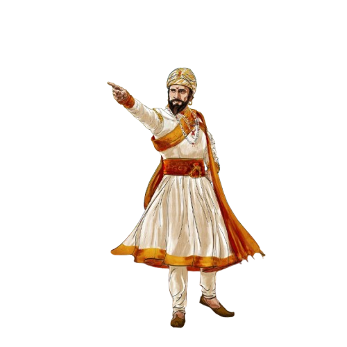
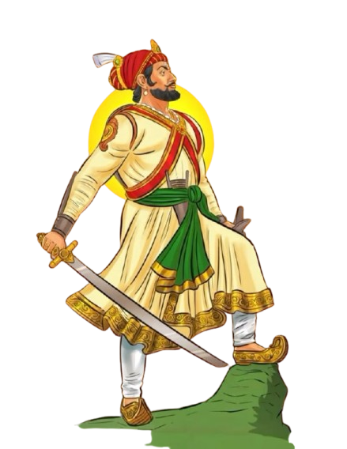
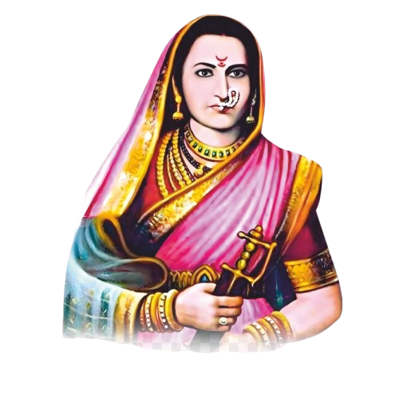
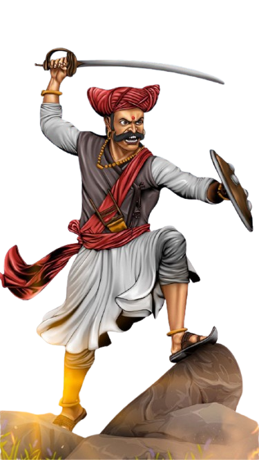
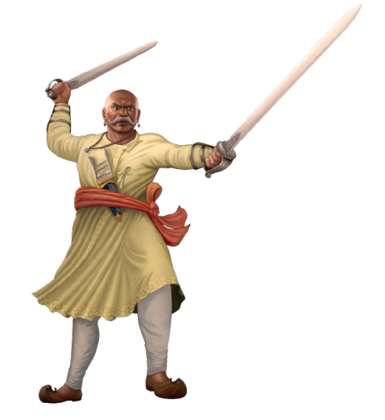
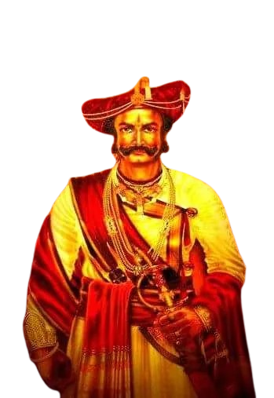

CHARACTERS
The Great Maratha Empire

Chhatrapati Shivaji Maharaj
1630-1680
Chhatrapati Shivaji Maharaj (1630–1680) was the founder of the
Maratha Empire in western India and is regarded as one of history’s
exemplary warrior-kings and administrators. Born on 19 February 1630
in Shivneri Fort, Maharashtra, to Shahaji Bhonsle and Jijabai,
Shivaji was raised in an environment defined by constant conflict
and a strong sense of justice, largely instilled by his mother.
Chhatrapati Shivaji Maharaj remains celebrated as a
forward-thinking ruler who championed Swaraj (self-rule),
religious toleration, social justice, and indigenous pride.

Chhatrapati Sambhaji Maharaj
1657-1689
Chhatrapati Sambhaji Maharaj (1657–1689) was the second
Chhatrapati of the Maratha Empire, succeeding his father, Chhatrapati
Shivaji Maharaj. Born on 14 May 1657, Sambhaji Maharaj was a formidable warrior
and a skilled administrator. His reign, though short-lived, was marked
by significant military campaigns against the Mughal Empire and the
establishment of Maratha dominance in southern India. Sambhaji Maharaj was known
for his fierce resistance against Mughal forces, particularly during the
Battle of Sangameshwar in 1679. His leadership and valor in the face of adversity
earned him a revered place in Maratha history. Despite facing immense challenges,

Rajmata Jijabai
1598-1674
Rajmata Jijabai (1598–1674) was the mother of Chhatrapati Shivaji Maharaj
and a pivotal figure in the Maratha Empire. Born on 12 January 1598, she played a
crucial role in shaping Shivaji Maharaj's values and vision for Swaraj (self-rule). Jijabai
was known for her unwavering support, wisdom, and resilience, which greatly influenced
her son's leadership style. Her teachings instilled in Shivaji Maharaj a deep sense of justice,
religious tolerance, and a commitment to the welfare of his people. Rajmata Jijabai's legacy
continues to inspire generations as a symbol of maternal strength and dedication to the cause
of Maratha independence.

Tanaji Malusare
1600-1670
Tanaji Malusare (1600–1670) was a legendary Maratha warrior and
commander under Chhatrapati Shivaji Maharaj. Born in 1600, he is best known for
his heroic role in the Battle of Sinhagad in 1670, where he led a daring assault
to recapture the fort from Mughal forces. Tanaji's bravery and sacrifice during the
battle, where he famously declared, "Gad aala pan Sinha gela" (The fort is captured,
but the lion is lost), have made him a symbol of valor and loyalty in Maratha history.
His legacy continues to inspire generations as a testament to the spirit of sacrifice
and dedication to the cause of Swaraj.

Baji Prabhu Deshpande
1615-1660
Baji Prabhu Deshpande (1615–1660) was a valiant Maratha warrior
and a close associate of Chhatrapati Shivaji Maharaj. Born in 1615, he is best
known for his heroic stand at the Battle of Pavan Khind in 1660, where he sacrificed
his life to ensure Shivaji's safe passage during a critical retreat. Baji Prabhu's
unwavering loyalty and courage in the face of overwhelming odds have made him a
legendary figure in Maratha history. His famous last words, "I will not let you down,
my king," epitomize his dedication to the cause of Swaraj and his enduring legacy as a
symbol of bravery and sacrifice.

Senapati Netaji Palkar
1620-1681
Senapati Netaji Palkar (1620–1681) was a prominent Maratha general
and a key figure in the early years of the Maratha Empire. Born in 1620, he served
under Chhatrapati Shivaji Maharaj and played a crucial role in expanding Maratha
territories. Netaji Palkar was known for his military acumen, strategic brilliance,
and loyalty to Shivaji Maharaj. His contributions to the Maratha cause included successful
campaigns against Mughal forces and the establishment of Maratha dominance in various
regions. His legacy as a skilled warrior and leader continues to be celebrated in
Maratha history.